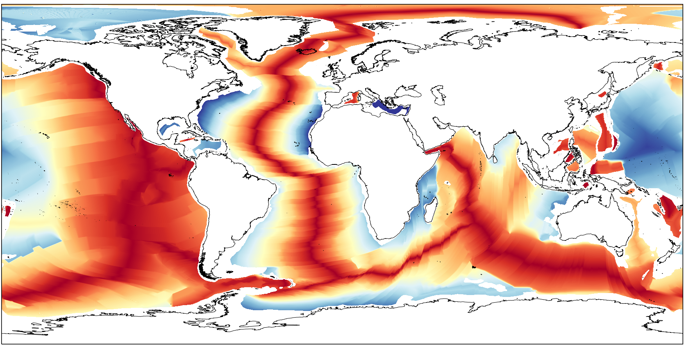
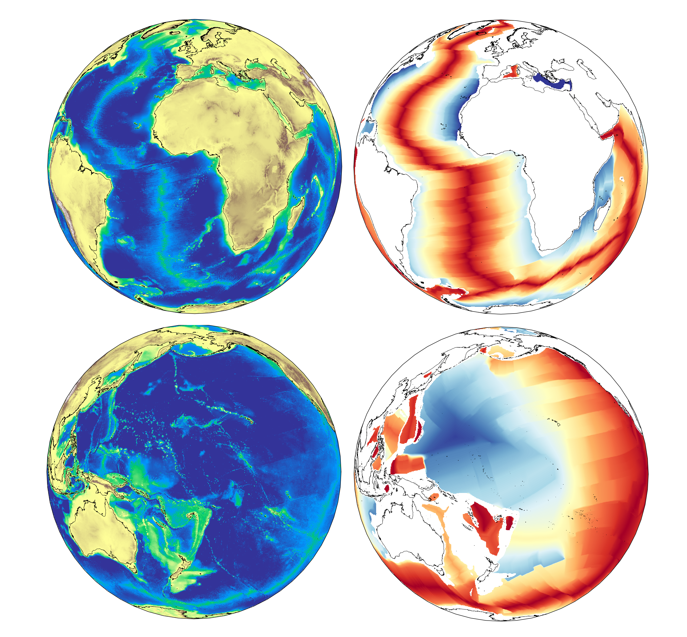
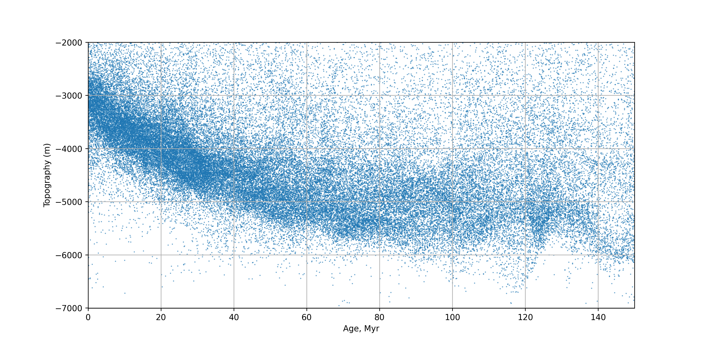

Mantle Dynamics EMSC 3002 - Lab worksheet#
In the lectures, we learned that, if the oceanic plates are really part of the mantle circulation, then they should be a thermal boundary layer and their thickness should scale as the square root of their age.
If you are interested in exploring the data, maps and examples behind this exercise, you can run through this tutorial
There are some questions to go through as we discuss the data and you can plot the theoretical curve at the end.
Global Bathymetry#
We also discussed how this thickness is quite difficult to measure directly, but that the depth of the seafloor (or bathymetry) is a proxy that is much more straightforward to obtain. There are global compilations of the Earth’s topography that we can download on demand.
For example, the ETOPO1 global topography data is a 1 arc minute resolution grid of height values (360x60 by 180x60 data points, Amante 2009) and includes variants to account for the base of the ice sheets, for example.
{kind=link}
Global Sea floor age#
The sea floor age map is available from the University of Sydney Earthbyte Group (https://www.earthbyte.org/age-spreading-rates-and-spreading-asymmetry-of-the-worlds-ocean-crust/). This is the 2008 version (Mueller et al, 2008).
{kind=link}
The data should look like this when plotted on a map. The grid is not quite as detailed as the topography map because this data is obtained by processing global magnetic reversals and the resolution is hostage to the Earth’s fluctuating magnetic field. It is provided as a 3601 x 1801 array of points with ages in units of \(10^4\) years (i.e. a value of 100 means 1 Myr)
Grids on the sphere#
Q: Calculation on a grid - (3)
How wide is one cell / pixel of ETOPO1 at full resolution at the equator, what is its area (2) ?
Assume the Earth is spherical. Show your working !
There are 21600 points at lattitude \(\pm 90^\circ\) in ETOPO1. What is the area does each of these points represent (1) ?
Does this matter when both datasets are on a lon/lat grid (1) ?
Orthographic plots#
If we plot the data on a sphere, we see maps that look like this:
{kind=link}
What we are actually doing here is making a transformation from the longitude / latitude grid onto a sphere and then another projection to represent that on the page. This should give you a good sense of the way the images change when going back and forth to the sphere.
Re-sampling the data / on a sphere.#
The data that we plotted have different resolutions but we can only relate the depth and age if they are at the same set of points. We could try to interpolate the data to the same grid (not too hard, right ?) or we could try to sample the data again using a uniform distribution on the sphere to remove the bias towards the poles. We do that in the notebooks example
Q: Data on the sphere - (3)
Look at the Orthographic maps. Do you think it matters if the areas are not quite right as long as both datasets are on grids (1) ?
If we want to do something about that, can you suggest two alternative corrections (2) ?
Data#
This is what we get from resampling the data on the sphere and plotting every single point.
{kind=link}
Stein and Stein (1992) suggest this theoretical relationship between depth and age:
(Note, they have a typo in their paper !)
You will need to print the graph of the plot above
Q: Plot the data - (4)
Sketch with your eye a curve through the data.
Plot the two curves from Stein and Stein, (1992) - overlap them so that you can see how they diverge (2)
Did their curve plot below or above yours ?
Summarize our class discussion of what we have not considered in our analysis that might be important (2)
References#
Amante, C. “ETOPO1 1 Arc-Minute Global Relief Model: Procedures, Data Sources and Analysis.” National Geophysical Data Center, NOAA, 2009. https://doi.org/10.7289/V5C8276M.
Müller, R.D., Sdrolias, M., Gaina, C. and Roest, W.R., 2008, Age spreading rates and spreading asymmetry of the world’s ocean crust, Geochemistry, Geophysics, Geosystems, 9, Q04006, doi:10.1029/2007GC001743
Stein, C. A., & Stein, S. (1992). A model for the global variation in oceanic depth and heat flow with lithospheric age. Nature, 359(10), 123–129. https://doi.org/10/dmmhkh